We believe security software like Kicksecure needs to remain Open Source and independent. Would you help sustain and grow the project? Learn more about our 11 year success story and maybe DONATE!
KVMDocumentationDownload SecurityPrevious page: KVMIndex page: DocumentationNext page: Download SecurityKicksecure for Qubes
Qubes (non-)persistence is a Qubes default and unspecific to Kicksecure.
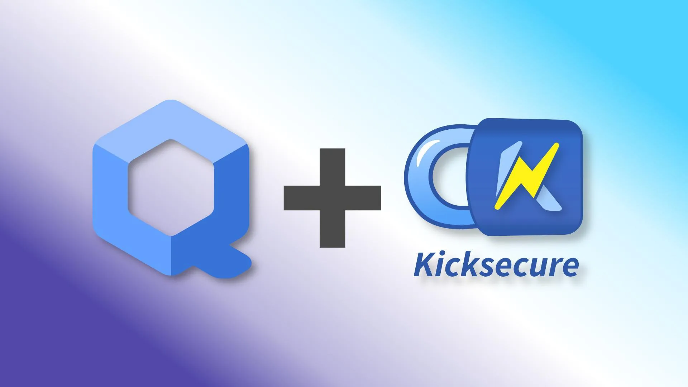
Kicksecure for Qubes OS.
Installation
Select an installation method.
Template
This is the recommended way to install Kicksecure for Qubes.
1 Select your version of Qubes OS.
Qubes R4.2
2 Notice.
Discouraged. Upgrading to Kicksecure 18 on Qubes R4.3 encouraged.
3 Installation.
In dom0.
qvm-template --enablerepo qubes-templates-community install kicksecure-17
4 Done.
Template kicksecure-17 has been installed.
Qubes R4.3
2 Installation.
In dom0.
qvm-template --enablerepo qubes-templates-community install kicksecure-18
3 Done.
Template kicksecure-18 has been installed.
Distribution Morphing
What is distro morphing? See Distribution Morphing.
Using the distro morphing is not the recommended way to install Kicksecure on Qubes.
In dom0.
1
Install debian-13 as per the Qubes Debian
Template documentation, which is unspecific to Kicksecure.
2
Clone Template debian-13 into Template
kicksecure-18.
3
Start the kicksecure-18 Template.
Inside the kicksecure-18 Template.
1 Follow the instructions Install Kicksecure inside Debian.
2
Optional. If you intend to use this template as the base for
sys-net, install the
firmware-nonfreedom-network package. This will provide
greater compatibility with networking hardware.
3 Shut down the Template.
4 Done.
Distribution morphing of Debian into Kicksecure is complete.
5 Change Template.
Optional: The user may change the Template for any App Qube from Debian to Kicksecure as per the usual Qubes way.
6 Create new App Qubes.
Optional: The user may create new App Qubes based on the
kicksecure-18 Template as per the usual Qubes way.
HVM
Using Kicksecure inside an HVM, installing Kicksecure using its ISO is not the recommended way to install Kicksecure on Qubes.
If the user wishes to use the ISO for any reason (such as testing, development, comparison, or curiosity), the following steps apply (More details can be found in Qubes documentation.
Note: You need to download the Kicksecure ISO inside a separate App Qube that will be used to install Kicksecure from (in the example below, the ISO has been downloaded in "debian-personal").
1 Create a new App Qube, following the instructions in the image.
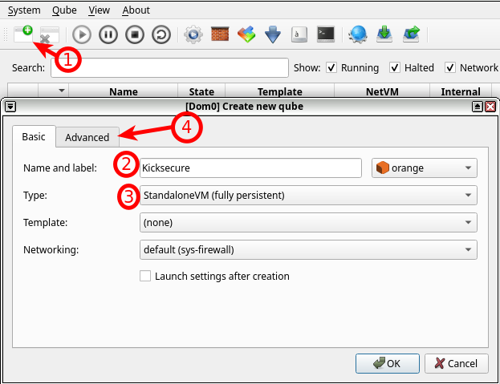
2 Remove "Install system from device" because we want to modify the VM before installing Kicksecure on it, then press "OK" to create the Kicksecure App Qube.
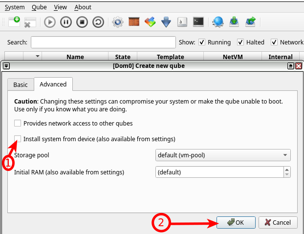
3 Enter the Kicksecure Qube settings.
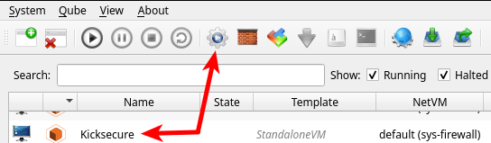
4 Preferably, change system storage to 20 GB, then press "Advanced".
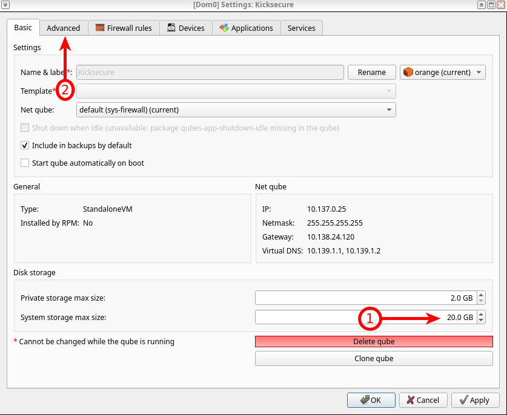
5 Disable "Include in memory balancing", then increase "Initial memory" to preferably 4 GB. Press "Apply" to adjust the edited settings, then press "Boot qube from CD-ROM" to choose the Kicksecure ISO.
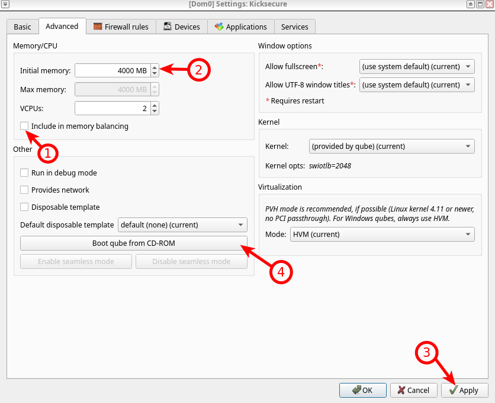
6 Choose the App Qube where you have downloaded the Kicksecure ISO, then press "..." to browse for the ISO path.
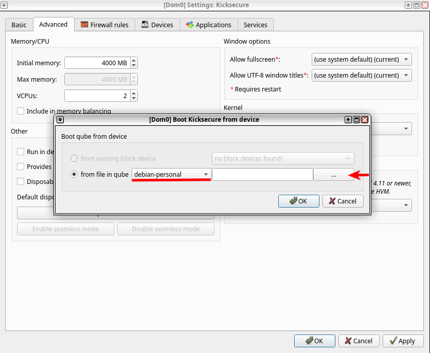
7 Choose the Kicksecure ISO.
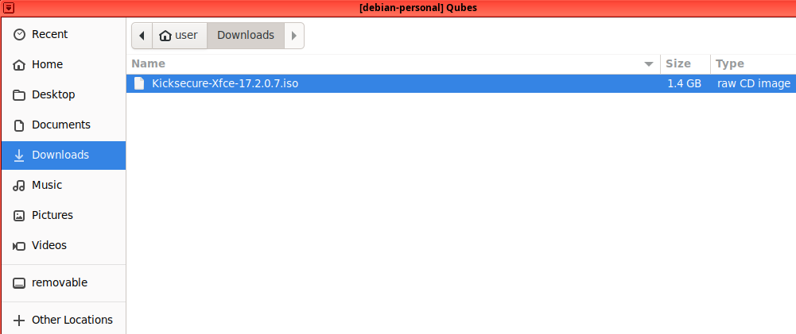
8 Make sure everything is correctly chosen, then press "OK".
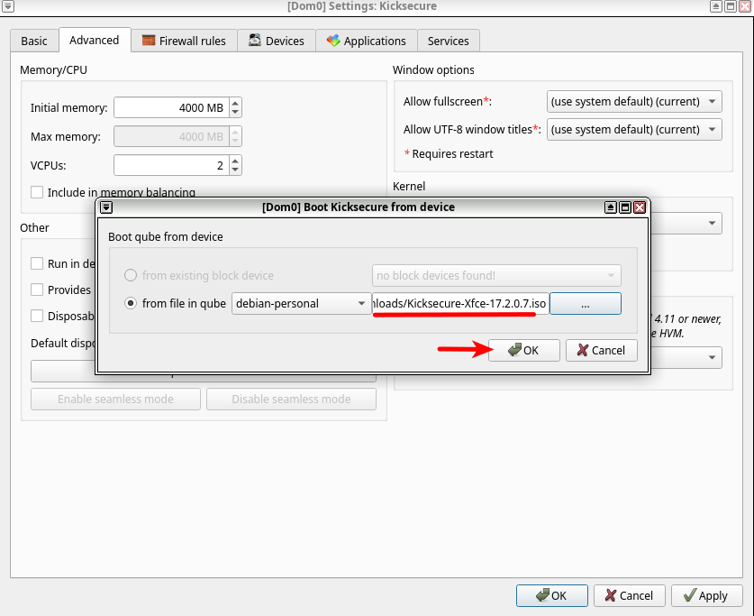
9 Kicksecure is booted and ready to be installed. Kicksecure supports offline installation, so there is no need for network configuration before installation.
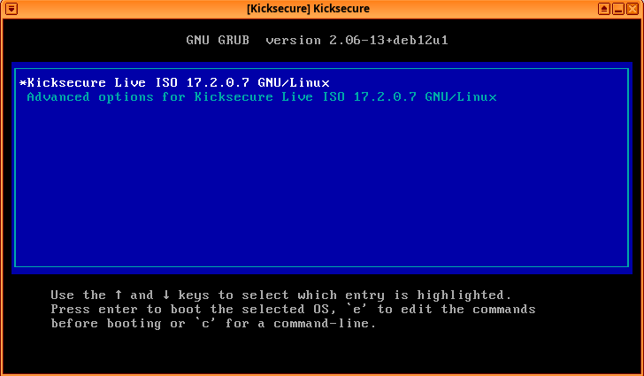
10 Done
HVM - Networking
If you want to use the internet before or after installation, you need to go through the following steps:
1 Right-click on the Network Manager taskbar icon, then choose "Edit connections..."
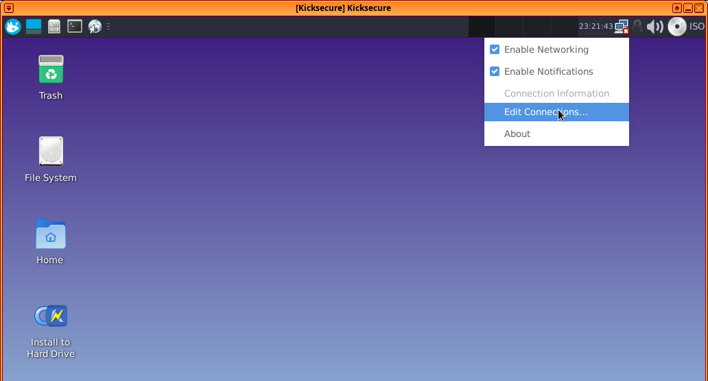
2 Choose "Wired connection 1", then press the settings (gear) icon.
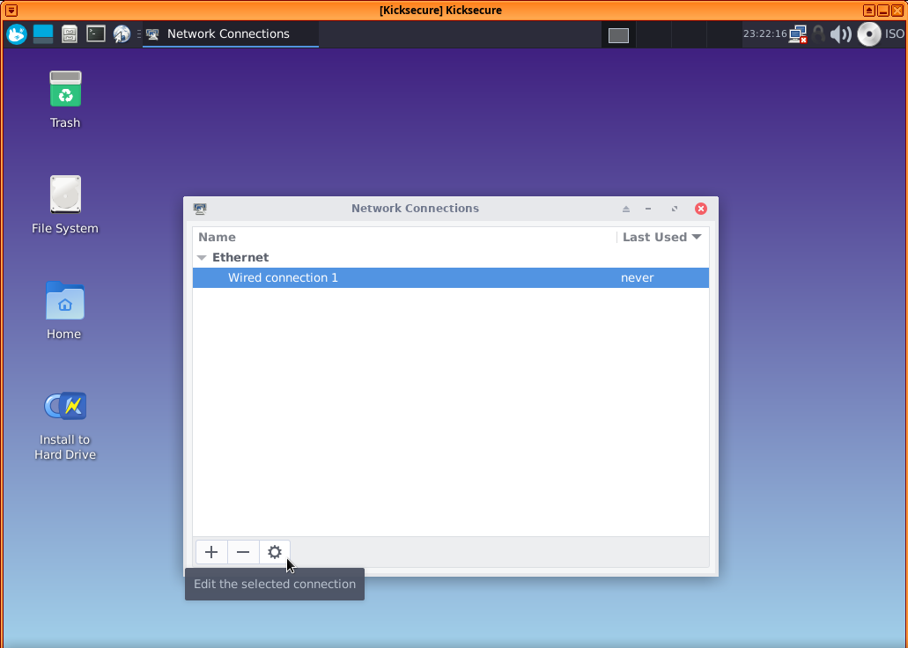
3 Choose "IPv4 settings", then under "Method", select "Manual", and press "Add".
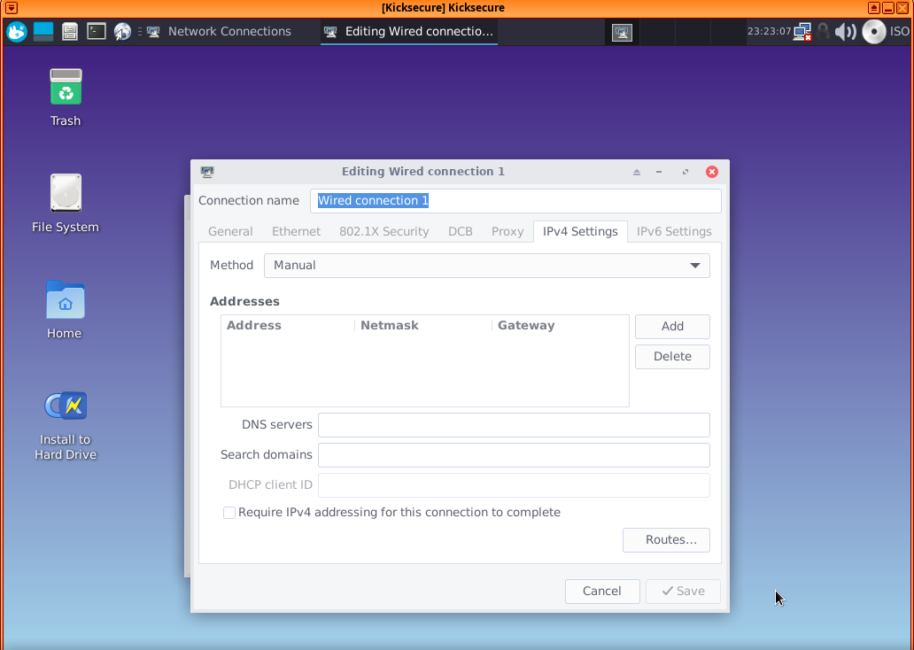
4
Fill in the blanks with the Net qube info, except for the
subnet mask, which should be set as 255.255.255.0 instead
of 255 at the end [2]. If the network still
does not work, try changing the gateway to 10.137.0.1
[3].
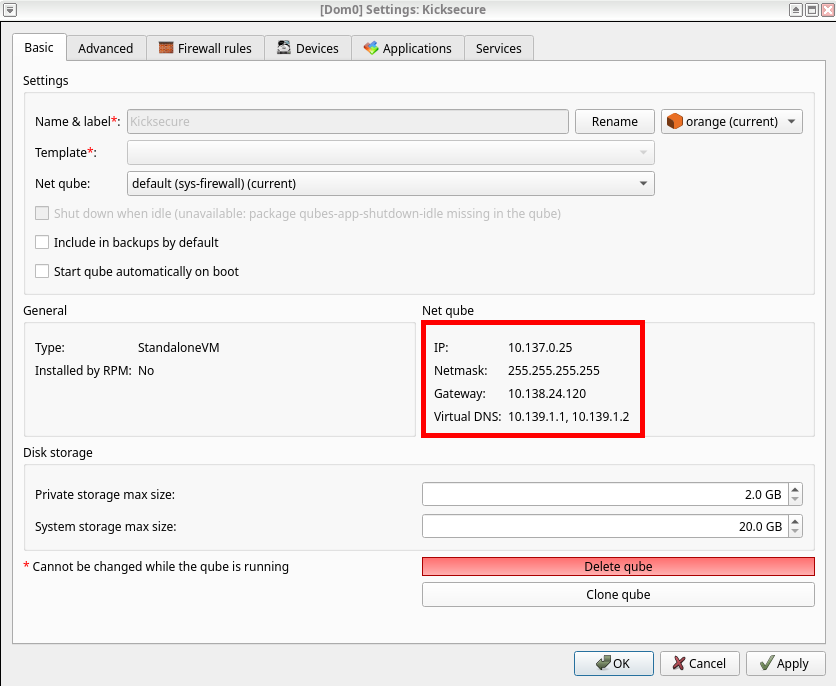
5 After filling in the blanks, press "Save." The Network Manager gear should update itself with the newly added information.
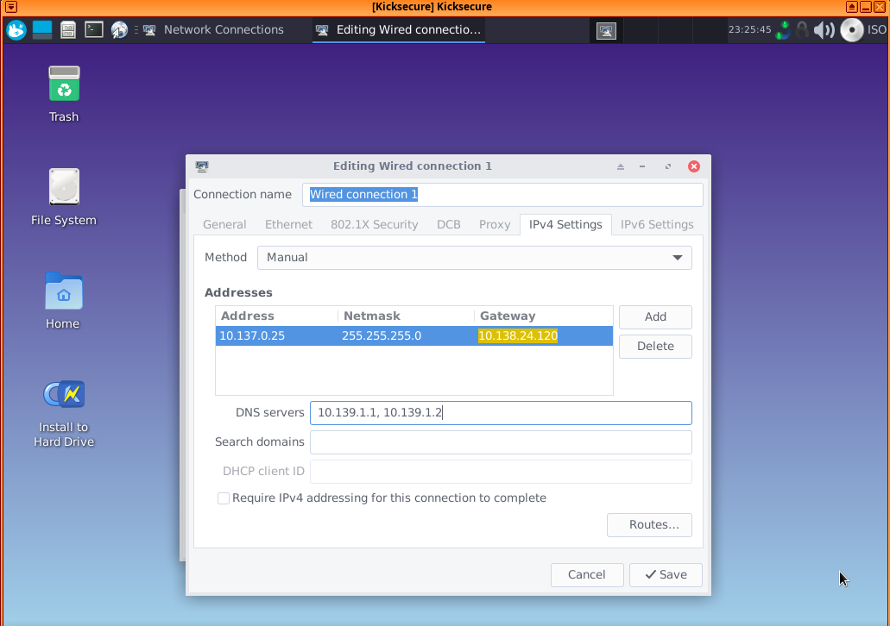
6 Note.
 If package
If package user-sysmaint-split is installed
(which is the default for new versions), do not disable
the "All users may connect to this network" setting for the
HVM's network. Doing so while booted in a sysmaint session will cause
the network to disappear from the user session, and vice versa.
6 Done.
See also:
- Qubes HVM: How to auto detect the network settings (IP, gateway) from inside the VM?
- Qubes (VM) Recovery.
HVM - Troubleshooting
HMM - Networking Troubleshooting
If networking is only working in either the user session or sysmaint
session, and is not functional in the other session, you may have
unintentionally disabled the
"All users may connect to this network" setting. To fix,
see footnote. [4]
Low RAM, CLI interface
If the user will see:
Figure: virtual console login screen

Then increase RAM according to the instructions in chapter #ISO to have the graphical entry.
Cloned HVM
Cloned HVM will not change its internal IP address automatically.
If the user wants to clone their HVM, they must change the internal IP address to match the newly created cloned HVM IP address. [5]
Support Status
How stable is this? It should be very stable. This is because Qubes-Whonix is based on Kicksecure.
The lead developer of Kicksecure is also a user of Qubes and uses Kicksecure in Qubes.
Service VMs
Kicksecure in Qubes service VMs such as sys-net,
sys-firewall, and sys-usb are functional. This
is classified as unsupported
to avoid complex support requests for issues not caused by Kicksecure
being directed at Kicksecure support. [6]
sys-net: Increase of initial RAM to 800 MB might be required.
If using in-VM kernel:
it's problematic for VMs with PCI devices (especially when using Debian kernel, due to old wifi drivers, but there are also other factors like significantly slower boot time in HVM mode).https://github.com/QubesOS/qubes-issues/issues/9570#issuecomment-2468812870
ClockVM
A ClockVM based on the Kicksecure Template is functional out of the box.
The only requirement is that the ClockVM uses Kicksecure as its
Template. For example, if using Qubes' default settings, where ClockVM
is set to sys-net by default and sys-net has
been configured by the user to use the kicksecure-18
Template, then ClockVM will be functional out of the box and use sdwdate for clock synchronization.
See also sdwdate
chapter, Qubes Specific.
Choose graphical user interface (GUI) or command line interface (CLI).
Using GUI
1. Start Menu -> Qubes Tools -> Qubes OS Global Config -> look for Clock Qube
2. Check the ClockVM setting.
Using CLI
1. Launch a dom0 terminal.
Click the Qubes App Launcher (blue/grey "Q")
→ Open the Terminal Emulator (QTerminal)

2. Check the ClockVM setting.
qubes-prefs clockvm
sys-net3. Optional: Change ClockVM to a different App Qube.
4. Ensure that the ClockVM has its Template set to
kicksecure-18.
5. Done.
The process of using Kicksecure as ClockVM has been completed.
Qubes Persistence
Inheritance [7] |
Persistence [8] |
|
|---|---|---|
n/a |
Everything |
|
|
|
|
|
|
|
|
Nothing |
Qubes Template Modifications
If a Qubes Template has been modified, to make changes in App Qubes based on that Template take effect, it is required to shut down the Template and restart the App Qubes based on that Template. This is a Qubes default and unspecific to Kicksecure.
To apply changes made to a Template:
1. Make the required modification to the Template.
2. Shut down the Template.
3. Shut down the App Qube based on the modified Template.
4. Start the App Qube based on the modified Template.
5. Done.
These steps ensure that all changes made to the Template are properly propagated to the App Qubes.
Known Issues
1 Qubes has potential local privilege escalation issue
- Issue: Qubes has a potential local privilege escalation
issue: harden
insecure permissions inside
/dev/xenfolder / research security impact of the Qubes/dev/xenfolder permissions #9717. - Notes: This issue is unspecific to Kicksecure and is entirely unrelated
to Kicksecure. It equally applies to App Qubes that are not using
qubes-core-agent-passwordless-rootsuch as Qubes Debian minimal Template.
2
Qubes OS R4.3: repeated Denied: sdwdate-gui.ConnectCheck
notifications
- Issue: On Qubes OS R4.3, it is possible a deluge of
notifications will appear any time a Kicksecure 18 template or AppVM is
running. These notifications will say
Denied: sdwdate-gui.ConnectCheck. This is related to sdwdate-gui. - Cause: This will result if
qubes-core-admin-addon-kicksecureis not installed and set up in dom0. - Resolution: If this occurs, follow the steps below.
- Qubes upstream ticket: qubes-core-admin-addon-{whonix,kicksecure} sometimes require a qubesd restart to tag VMs #10645
1
In dom0, install qubes-core-admin-addon-kicksecure.
sudo qubes-dom0-update --action=install qubes-core-admin-addon-kicksecure
2
Restart qubesd.
sudo systemctl restart qubesd.service
3
Launch Qterminal in the kicksecure-18 template
4
Switch to bash
- Command: In the terminal, run
bash. - Note: The default shell
(
zsh) will not work here.
bash
5 Run the post-install scripts
cd /etc/qubes/post-install.d || exit 1 for i in *.sh; do source "$i"; done
6 Shut down template and AppVMs
- Action: Shut down the
kicksecure-18template and all AppVMs based on it.
7 In dom0, verify Kicksecure features
qvm-features kicksecure-18 | grep '^kicksecure'
8 Confirm expected output.
- Expected: Verify that you see a line that looks like
kicksecure 1.
9 Done.
- Result: The process of installing and setting up
qubes-core-admin-addon-kicksecureis complete.
In-VM Kernel
 Advanced users only!
Advanced users only!
1 Follow the Qubes OS Installing kernel in Debian VM instructions.
2 Ensure the Qubes VM kernel is functional before proceeding.
Note: Qubes VM kernel issues should be raised at Qubes support and not in Kicksecure forums. [16]
3 Reboot dom0 with the Qubes VM kernel. This is because the Qubes VM kernel might break unrelated things such as the USB VM. [17]
4 Once the Qubes VM kernel is functional, proceed with the following instructions.
tirdad
 Advanced users only!
Advanced users only!
1. tirdad requires #In-VM Kernel.
2. Install.
Install package(s) tirdad following these
instructions:
1 Platform specific notice.
- Kicksecure: No special notice.
- Kicksecure-Qubes: In Template.
2 Update the package lists and upgrade the system.
sudo apt update && sudo apt full-upgrade
3
Install the tirdad package(s).
Using apt command line --no-install-recommends option is in
most cases optional.
sudo apt install --no-install-recommends tirdad
4 Platform specific notice.
- Kicksecure: No special notice.
- Kicksecure-Qubes: Shut down Template and restart App Qubes based on it as per Qubes Template Modification.
5 Done.
The procedure of installing package(s) tirdad is
complete.
Developer Information
Information for developers:
qubes-template-kicksecuresource code- Qubes GitHub feature request: build Kicksecure Qubes Template #9573
- Kicksecure-Qubes development wiki page
- Kicksecure-Qubes Template development forum discussion
- Please contribute to Kicksecure and Qubes OS by creating and
maintaining a
kicksecure-18Qubes Template.
Footnotes
- qubes-core-admin-addon-kicksecure:
Note: Running this command will not be necessary in R4.3 final release. This is only necessary if using a Qubes R4.3 installation from an earlier testing or release candidate ISO. sudo qubes-dom0-update --action=install qubes-core-admin-addon-kicksecure sudo systemctl restart qubesd.service - https://github.com/QubesOS/qubes-issues/issues/4189#issuecomment-515803005
- https://github.com/QubesOS/qubes-issues/issues/7412
- 1
Boot into whichever session has working networking.
2
Right-click on the Network Manager taskbar icon, then choose "Edit
connections..."
3
Choose "Wired connection 1", then press the settings (gear) icon.
4
Choose "General", then ensure
"
All users may connect to this network" is checked. 5 Press "Save". 6 Done. Networking should now work in the previously broken session. - https://github.com/QubesOS/qubes-issues/issues/7845
- https://forums.kicksecure.com/t/kicksecure-for-sys-qubes-and-sys-vpn/442
- Upon creation.
- Following shutdown.
- https://www.qubes-os.org/doc/templates/
- The former name was Template.
- The former name was AppVM or TemplateBasedVM.
- https://github.com/QubesOS/qubes-issues/issues/4175
- Former names included Disposables Template, DVM Template, and DVM.
- https://www.qubes-os.org/doc/glossary/#disposable
- Former names included Disposables and DispVM.
- Whonix forums: What to post in this Qubes-Whonix forum and what not Qubes feature requests and bug reports: * Simplify and promote using in-vm kernel #5212 * Use in-vm kernel for Whonix (and possibly Kicksecure) #9570 * Fix booting on 4k storage also for templates using in-vm kernel #9759
- As experienced firsthand by Kicksecure developer Patrick Schleizer in the past with Qubes R4.2.
Categories: Documentation